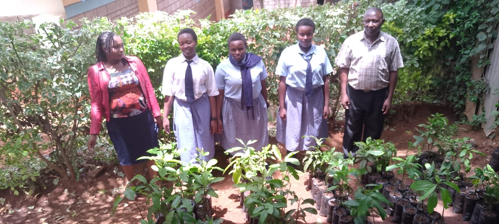
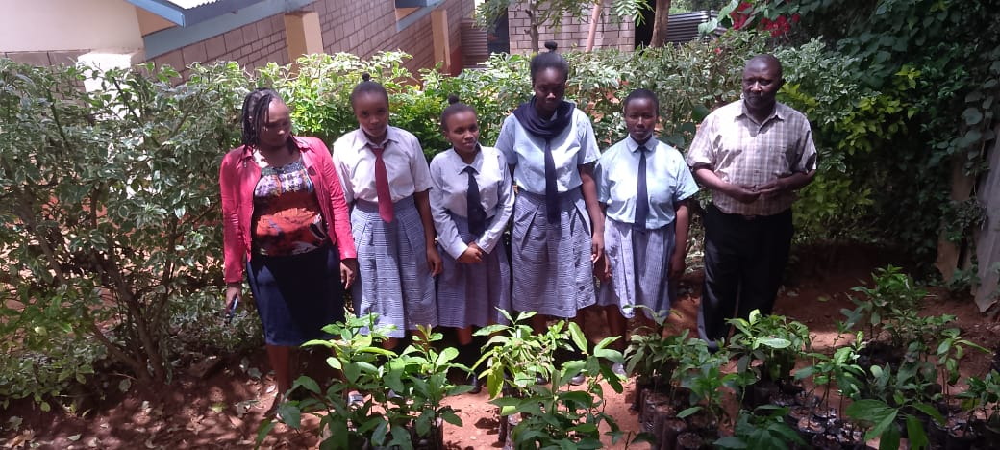
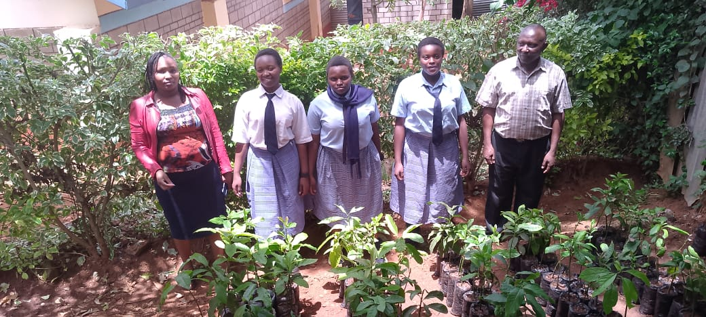
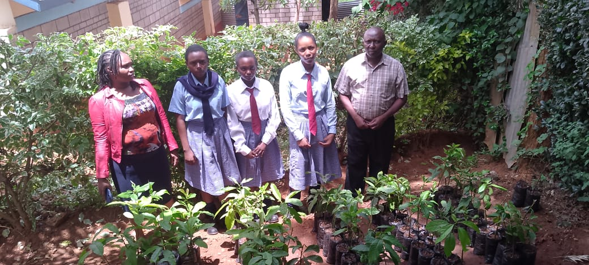

Student Projects
Group Pictorial Presentation of the Projects
GROUP 1
Planted various indigenous trees and learned about their importance in environmental conservation and soil protection.
GROUP 2
Participated in tree planting activities around the school compound, focusing on fruit trees for shade and nutrition.
GROUP 3
Prepared seedbeds and planted tree seedlings while studying how trees help prevent soil erosion and improve air quality.
GROUP 4
Took part in watering, mulching, and monitoring tree growth as part of a long-term reforestation initiative.
GENERAL GROUP

Learned about different tree species, their growth requirements, and helped in labeling and mapping the planted trees.
GENERAL GROUP

Learned about different tree species, their growth requirements, and helped in labeling and mapping the planted trees.